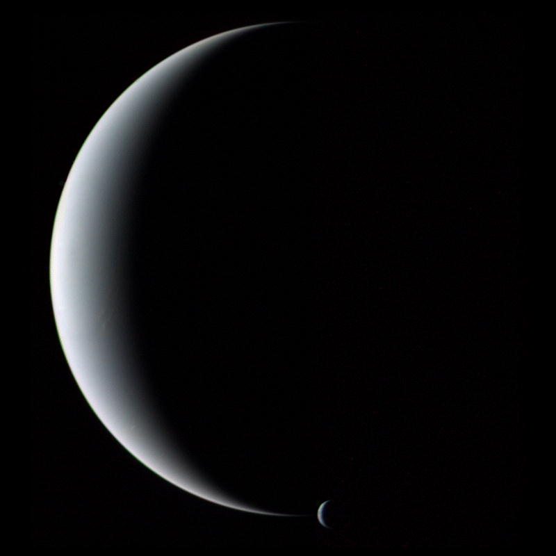

Neptuno
 Características físicas
Características físicas
| Masa | 1.024x10^25 kg |
| Radio | 24622 km |
| Distancia relativa al Sol | 30 UA |
| Tiempo en completar la órbita | 164 años y 288 días |
| Temperatura media | -220ºC |
| Número de satélites conocidos | 14 |
Neptuno es el octavo planeta en distancia respecto al Sol y el más lejano del sistema solar. Forma parte de los denominados planetas exteriores, y dentro de estos, es uno de los gigantes helados, y es el primero que fue descubierto gracias a predicciones matemáticas. Su nombre fue puesto en honor al dios romano del mar —Neptuno—, y es el cuarto planeta en diámetro y el tercero más grande en masa. Su masa es diecisiete veces la de la Tierra y ligeramente mayor que la de su planeta «gemelo» Urano, que tiene quince masas terrestres y no es tan denso. En promedio, Neptuno orbita el Sol a una distancia de 30,1 ua. Su símbolo astronómico es ♆, una versión estilizada del tridente del dios Neptuno. Neptuno es un planeta dinámico, con manchas que recuerdan las tempestades de Júpiter. La más grande, la Gran Mancha Oscura, tenía un tamaño similar al de la Tierra, pero en 1994 desapareció y se ha formado otra. Los vientos más fuertes de cualquier planeta del sistema solar se encuentran en Neptuno. Neptuno tiene una composición bastante similar a la del planeta Urano, y ambos tienen composiciones que difieren mucho de los demás gigantes gaseosos, Júpiter y Saturno. La atmósfera de Neptuno, como las de Júpiter y de Saturno, se compone principalmente de hidrógeno y helio, junto con vestigios de hidrocarburos y posiblemente nitrógeno. Contiene una mayor proporción de hielos, tales como agua (H 2O), amoníaco (NH3) y metano (CH4).
Propiedades de la atmósferaAl orbitar tan lejos del Sol, Neptuno recibe muy poco calor. Su temperatura en la superficie es de -218 °C (55 K). Sin embargo, el planeta parece tener una fuente interna de calor. Se piensa que puede ser un remanente del calor producido por la concreción de materia durante la creación del mismo, que ahora irradia calor lentamente hacia el espacio. Esta fuente de calor interno produce potentísimos sistemas climáticos en torno al planeta, como la Gran Mancha Oscura que la sonda Voyager 2 descubrió a su paso por el sistema de Neptuno en 1989. El color de Neptuno difiere del de Urano debido a la cantidad de helio contenido en su atmósfera, que es ligeramente mayor. Debido a esto, Neptuno absorbe más luz roja del Sol que su planeta vecino, por tanto refleja un azul mucho más intenso. La atmósfera de Neptuno tiene una estructura de bandas similar a la encontrada en los otros gigantes gaseosos. En este planeta se producen fenómenos como huracanes gigantes, con un diámetro igual al de la Tierra, y otras formaciones de nubes, incluyendo algunos extensos cirros, encima (50 km) de las nubes principales. De este modo Neptuno tiene un sistema de nubes muy activo, posiblemente más activo que el de Júpiter. La velocidad del viento en la atmósfera de Neptuno es de hasta 2000 km/h, siendo la mayor del sistema solar, y se cree que se alimentan del flujo de calor interno.
 Exploración espacialLa nave Voyager 2, fue lanzada 16 días antes que su gemela, la Voyager 1. La trayectoria que siguió fue más lenta que la de su compañera, para poder explorar no solo Júpiter y Saturno, sino proseguir la misión hasta Urano e incluso Neptuno. Para poder alcanzar los cuatro planetas, el Voyager 2 requería un lanzamiento que le diera todo el empuje del que fuera capaz el cohete Titán III. Y mientras que el cohete que expulsó al Voyager 1 no logró un buen lanzamiento, el del Voyager 2 funcionó a la perfección. De haberse usado el primer cohete para el Voyager 2, la nave no habría llegado a Urano y Neptuno. Por fortuna el Voyager 2 tuvo el mejor cohete. Al llegar Voyager 2 a Neptuno, el 25 de agosto de 1989 a las 3:56 hora de Greenwich, ciento cuarenta y tres años después de su descubrimiento, poco sabíamos acerca de este planeta. El más lejano de los cuatro "planetas gigantes" está treinta veces más alejado del Sol que la Tierra y tarda 165 años en darle una vuelta al Sol. Su diámetro es unas cuatro veces más grande que el de nuestro planeta. Se le conocían dos lunas, entre ellas Tritón uno de los objetos más interesantes del sistema solar, y se sospechaba que podría tener anillos. Los datos recabados en unas cuantas horas por el Voyager 2 nos dieron más información que cerca de un siglo y medio de observaciones astronómicas desde la Tierra.